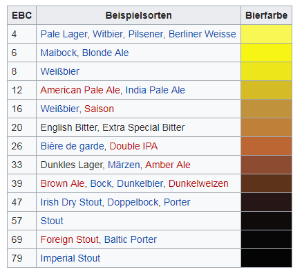
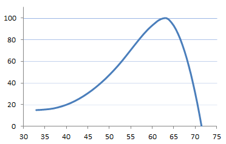
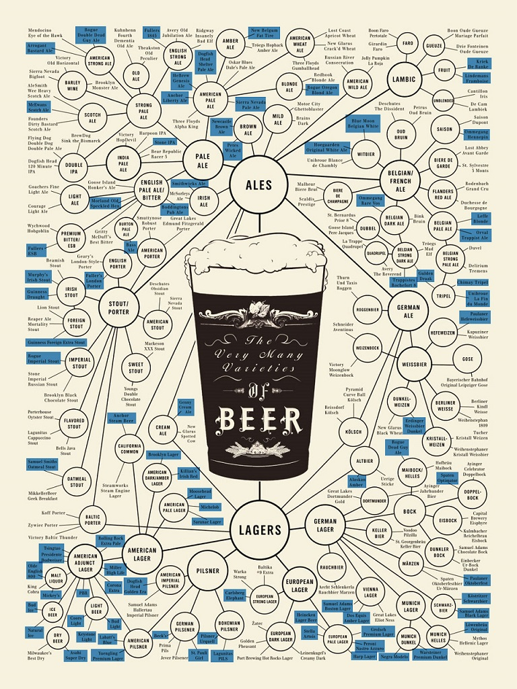
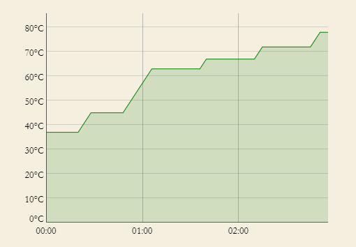

Braubrevier
Links
- Müggelland Brauerei: https://braureka.de/
- gute Braurechner
- Berechnung der Schüttung
- Maische und Mehr: https://www.maischemalzundmehr.de/index.php
- Sudhausausbeute
- Verschiedene Berechungen: http://fabier.de/biercalcs.html
- Stammwürzekorrektur bei höherer Temperatur
- Mischkreuz (Wieviel Wasser um eine gewünschte Stammwürze zu erreichen?)
- Karbonisierung
Malz
Zum Brauen kann im Prinzip jede Getreidesorte zu Malz verarbeitet werden, meist Gerste und Weizen.
Herstellung:
Die gereinigten Körner werden 1-2 Tage in Wasser gequillt, bis sie zu keimen beginnen.
Dadurch werden u.a. die im Korn enthaltenen Enzyme aktiviert, welche später beim Maischen
für die Umwandlung von Stärke in Malzzucker wichtig sind.
Die Keimung wird durch Darren abgebrochen. Darunter versteht man das Trocknen des Malzes
mit heißer Luft. Die Keime werden danach entfernt.
Das Malz enthält nach dem Herstellungsprozess alle wichtigen Enzyme, z.B. β-Amylase, α-Amylase, Protease, Glukanase. Die meisten werden beim Keimen erzeugt.
Einheit EBC (Europeam Brewery Convention): Maß für die Farbstärke des Bieres. Von ca. 4 (Pils) bis ca. 79 (Imperial Stout).
Basismalze
Pale Ale- Aus Gerste, farblich zwischen Pilsner und Wiener. (5.5-7.5 EBC)
Pilsener- Aus Gerste, weltweit am meisten verwendet, besonders hell.
Wiener- Aus Gerste, kräftige Farbe (7-9 EBC). Grundmalz für Wiener Lager.
Münchner- Aus Gerste, starke Farbtiefe, für malzige, dunkle Biere. (12-25 EBC)
Weizenmalz- Weizen besitzt keine Spelzen, bildet also keine nennenswerte Treberschicht. Deshalb verwendet man normalerweise max. 60% Weizenmalz.
Spezialmalze
Karamellmalz- Enthält karamellisierte und nicht mehr vergärbare Zucker.
RöstmalzRauchmalz
Bierfarbe
Farbsystem EBC (European Brewing Convention)
Berechnung (gewichtetes Mittel mal Stammwürze durch 10)
\(c=(p_1 \cdot c_1 + p_2 \cdot c_2 + ... +p_n \cdot c_n)\cdot \frac{SW}{10}\)
- \(c\) Bierfarbe [EBC]
- \(c_i\) individuelle Malzfarbe [EBC]
- \(p_i\) Malzanteil [%/100]
- \(SW\) Stammwürze [°P]

Im angelsächsichen Raum wir das Farbsystem SRM (Standard Reference Method) verwendet. Der EBC-Wert ist ca. das Doppelte vom SRM-Wert.
Diastatische Kraft
Fähigkeit von Malzenzymen Stärke in Zucker umzuwandeln, gemessen in Windisch-Kokbach-Graden oder in Grad Lintner.
Online Calculator: https://www.topdownbrew.com/diastaticPower.html
Richtwerte:
| Malz | °L |
|---|---|
| Pilsener | 125 |
| Weizenmalz | 120 |
| Pale Ale | 110 |
| Wiener | 100 |
| Münchner | 70 |
| Röstmalz | 0 |
Faustformel: Die Maische sollte min. 70°L haben.
Sudhausausbeute
Maß für die Effizienz der Maischearbeit (Anlage & Methodik). Gibt an wieviel Extrakt (Zucker) aus dem Malz gewonnen wurde. Kennt man die Sudhausausbeute, kann man berechnen welche Schüttung bei gewünschter Ausschlagwürze + Stammwürze benötigt wird.
Zucker und Alkohol
Nach dem Maischen befindet sich vergärbarer und nicht vergärbarer Zucker in der Maische.
Typisches Zuckerprofil
| Maltose | 50% |
| Maltotriose | 18% |
| Glukose | 10% |
| Saccharose | 8% |
| Fruktose | 2% |
| Andere Kohlenhydrate | 12% |
Maltose (Malzzucker)- Vergärbarer Zucker
\(C_{12} H_{22} O_{11}\)
MaltotrioseGlukoseSaccharoseFruktose
Ethanol
\(C_2 H_5 OH\)
Methanol
\(C H_3 OH\)
Enzyme
Enzymarten:
Amylasen- Stärkeabbau (Amylum-Stärke)
Peptidasen- Eiweißabbau (Peptid-Eiweißstoff)
Glucanasen- Zelluloseabbau
Lipasen- Fettsäureabbau (Lipide-Fette)
- (no term)
- Glukanase 35°C-45°C
- (no term)
- Protease 45°C-55°C, Aufbrechen von Eiweißen (Schaumkonsistenz)
- (no term)
- Pepidase 45°C-55°C, Erzeugung von Arminosäuren für die Hefe
- (no term)
- β-Amylase 60°C-65°C, Maltose (vergärbar)
- (no term)
- α-Amylase 70°C-75°C, Dextrin (schwer vergärbar)
Hopfen
Die Zugabe von Hopfen erfüllt zwei Zwecke:
- Haltbarmachung des Bieres
- Aromatisierung des Bieres
Dementsprechend wird zwischen Bitterhopfen und Aromahopfen unterschieden.
Die Bitterkeit wird in IBU (International Bitterness Unit) angegeben.
Typische Werte:
- IPA
- 40-
- Pils
- 30-45
- Irish Stout
- 30-70
- Porter
- 20-40
- Märzen
- 18-25
- Ale
- 15-30
Hefe
Alkoholische Gärung
Enzymatischer Prozess bei dem Glukose in Ethanol und Kohlendioxyd abgebaut wird. Diese Art der Energiegewinnung wird von der Hefe verwendet, wenn Sauerstoff zur Atmung fehlt (anoxe Bedingungen).
Hefe anstellen: Hefe in die Würze geben.
Untergärige Hefe
- Niedrigere Gärtemperatur (9°C-15°C), damit einher geht eine längere Gärdauer (1-3 Wochen).
- Mehr Schwefel in der Hauptgärung (Geruch von faulen Eiern), diese verflüchtigt sich aber im Lauf der Fermentierung.
Obergärige Hefe
Autolyse
Brauvorgang
1. Maischen
Lösen von Malzinhaltsstoffe (Stärke, Eiweiße, Zellwandsubstanzen) in Wasser durch Malzenzyme. Damit die Enzyme aktiv werden, bedarf es verschiedener Temperaturstufen (Rasten).
wichtige Enzyme:
- Glukanase 35°C-45°C
- Protease 45°C-55°C, Aufbrechen von Eiweißen (Schaumkonsistenz)
- Pepidase 45°C-55°C, Erzeugung von Arminosäuren für die Hefe
- β-Amylase 60°C-65°C, Maltose (vergärbar)
- α-Amylase 70°C-75°C, Dextrin (schwer vergärbar)
Typischer Verlauf der Enzymaktivität für die β-Amylase

Vorgang:
- Das geschrotete Malz wird in einem Maischbottich mit ca. 45°C heißem Wasser vermischt.
- Maische zwischen 41°C und 44°C erhitzen. Temperatur für ca. 20 min halten.
- Maische auf 60 - 63°C erhitzen, ca. 30 min rasten.
- Maische auf 75 - 78°C erhitzen, ca. 30 min rasten.(NICHT über 78°C gehen!)
- Jodprobe
Weist Stärke nach, d.h. testet ob die Stärke vollständig in Zucker (Maltose) umgewandelt wurde. Ist dies der Fall, verfärbt sich das Jod nicht mehr dunkel.
Anmerkungen:
- Werden Haferflocken verwendet, müssen diese nicht extra verkleistert werden, da sie bei der Herstellung bereits entsprechend behandelt wurden.
Rasten
- Glukanaserast (Gummirast) (20 min @ 34°C-40°C)
- Um eine Eindickung der Maische (Läuterprobleme) zu verhindern, werden Glukane aufgespalten.
- Eiweißrast (5-15 min @ 53°C)
Eiweiß werden durch spezielle Enzyme abgebaut, was zu einer besseren Klärung und angenehmeren Geschmack des Bieres führt. Eine gewisse Menge Resteiweiß muss als Nahrung für die Hefe vorhanden bleiben und sorgt für gute Schaumbildung.
Bei hochwertigen Malzen wird die Eiweißlösung bereits in der Mälzerei erledigt. In diesem Fall ist eine Eiweißrast eher schädlich, da ein weiterer Eiweißabbau auf Kosten des Bierkörpers geht.
Auch kommt es bei dieser Rast zu einer Freisetzung von freiem Aminostickstoff (FAN), den die Hefe für eine einwandfreie Gärung benötigt.
- Maltoserast (63°C)
- Bildung von Maltose mit Hilfe des Enzyms β-Amylase. Optimaler ph-Wert: 5.6 - 5.8
- Verzukerungsrast (73°C)
- Bildung von Dextrin (schwer vergärbare längere Zuckermoleküle) mit Hilfe des Enzyms α-Amylase. Der Dextringehalt ist wesentlich für die Vollmundikeit des Bieres. Optimaler ph-Wert: 5.6 - 5.8
2. Läutern
Filtern der Maische. Umschöpfen der Maische in einen Läuterbottich, anschließend ist Läuterruhe.
Aus dem Läuterbottich wird die Flüssigkeit (Vorderwürze) abgelassen (zurück in den gereinigten Kochtopf). Versiegt der Würzestrom muss der Treberkuchen aufgehackt werden. Um weitere Inhaltsstoffe aus dem Treber auszulösen wird nachgegossen. Im Rezept sind die entsprechenden Wassermengen für die Nachgüsse angegeben.
3. Würzekochen
Die Würze wird im Kochtopf gekocht. Eiweiße und Enzyme werden dabei denaturiert und setzten sich als Heißtrub an der Oberfläche ab. Nun wird Hopfen zugegeben. Die α-Säure des Hopfens wird isomerisiert und gelangt so in die Würze. Entscheidend dafür ist der ph-Wert der Würze. Mit der Bierspindel wird die Dichte der Würze ermittelt und durch nachgießen wird die angepeilte Stammwürze eingestellt. Da man mit dem Nachgießen nicht warten will bis die Würze abgekühlt ist, kann man mit entsprechenden Braurechnern den gemessenen Wert auf die Zieltemperatur umrechnen. Ebenfalls sollte das Einstellen der Stammwürze mit vorher abgekühltem Wasser geschehen um das Abkühlen der Würze zu beschleunigen.
Anmerkungen:
- Ohne Deckel kochen, damit DMS verdampfen kann.
- Bei Verwendung von Pilsener- oder Pale Ale Malz wenigstents 90min kochen um DMS zu reduzieren.
- Möglichst schnell unter 60°C abkühlen um den DMS Anteil, der zwischen 100°C und 60°C entsteht möglichst gering zu halten.
4. Gärung
Die Würze wird noch im Kochtopf auf die für die Hefe notwendige Temperatur (z.B. 18-23°C für Liberty Bell Ale Hefe) abgekühlt. Dafür verwendet man z.B. eine Kühlspirale. Es ist günstig die Kühlspirale eine Weile beim Würzekochen in der kochenden Würze zu sterilisieren. Nun muss in den Gärbottich umgefüllt werden. Dafür eignet sich ein sterilisierter Silikonschlauch. Für das Umfüllen kann man den Whirlpooleffekt nutzen. Man versetzt dafür mit dem Braupaddel die Würze in Rotation. Dadurch bildet sich in der Mitte ein Trubkegel und man kann die Würze mit dem Schlauch von oben abziehen. Was sich nicht mit dem Schlauch abziehen lässt filtert man durch ein Tuch.
Dann wird im Gärbottich die Hefe zugegeben (Anstellen), wobei mit der Braupaddel Luft untergerührt wird. Die Hauptgärung erfolgt ca. innerhalb der ersten 3-5 Tage (obergärig) bzw. 2-3 Wochen (untergärig).
Karbonisierung
Wieviel CO2 soll ins Bier kommen?
5. Lagerung
Das in Flaschen oder in ein Fass (evtl. unter Beigabe von Zuckerwasser) abgefüllte Bier wird 3-4 Wochen gelagert.
Während der Hauptgärung wird Diacetyl erzeugt. Dieses muss bei der Lagerung wieder abgebaut werden, da es ansonsten einen Fehlgeschmack im Bier erzeugt.
Utensilien
- Kochtopf (beheizt) (Maischbottich, Würze- bzw. Sudpfanne)
- Läuterbottich
- Läuterfilter, Läuterhexe
- Kühlspirale
- Thermometer
- Braupaddel
- Jodlösung
- Filtertuch
- Bierspindel
- Waage
- Reinigungsmittel (Isopropanol, Gläserbürste, Bürste, Fetzen)
- Schöpfbehälter
- Erlenmeyerkolben
- Watte
Typen von Bier

Main distinction: Ale vs. Lager or top fermented vs. bottom fermented.
Top Fermented (Ales)
- Ale obergärig,
- IPA
- Stout
- top-fermented
- often patent malt (barley)
- often contains roasted barley (instead of roasted malt)
- Subcategories
- Imperial Stout
- Chocolate Stout
- Oatmeal Stout
- Milk Stout
- Porter
- roasted barley malt
- chocolate malt
- Weissbier
Bottom Fermented (Lagers)
- Schwarzbier
- untergärig
- Pils
- Märzen
Difference between Stout and Porter
Historically Brown Stout simply was the name of the strongest version of porter. The word stout applied to beer simply meant "strong".
Bier verkosten
KlarheitSchaum- Größe der Schaumblasen, Stabilität.
FarbeGeruchKörperBitterkeitAntrunk,Nachtrunk,Ausklang
Bierfehler
Geruch:
- Butter, ranzig, seifig
- Diacetyl
- Katzenurin
- Oxidation
- Maisgeschmack
- Dimethylsulfit (DMS)
Interessante Biere
Brauversuche
Rezeptentwicklung
Um ein Rezept zu entwickeln legt man, je nach gewünschter Biersorte, eine Malzmischung fest und berechnet die Stammwürze und die Bierfarbe (Beersmith oder Online Rechner) für das gewünschte Ausschlagvolumen.
Online Rechner der Müggelland-Brauerei:
- https://brauerei.mueggelland.de/rezeptkalkulator.html
- https://brauerei.mueggelland.de/schuettung.html
Ein schönes Open-Source-Programm (kleiner-brauhelfer) findet sich hier:
Man spiele dann einfach mit den Mengen bis man vernünftige Werte erhält. Dabei bedenke man die jeweilige diastatische Kraft bzgl. Alkohol und die entsprechenden EBC-Werte bzgl. Farbe der verschiedenen Malzsorten.
Ziele:
- Stammwürze
- Ausschlagvolumen
- Farbe [EBC]
- Bitterkeit [IBU]
Zu bedenken ist:
- Verdunstungsgrad
2018
2018.05.19 (Sa.) Scottish Ale
Zutaten
- Malz
| m [kg] | % | Typ | EBC |
|---|---|---|---|
| 6.33 | 86 | Pale Ale Malz | 5.5-7.5 |
| 1 | 15 | Caraamber | 60-80 |
- Hopfen
- 18 g Northern Brewer (BH, 15%)
- 20 g Fuggle (AH, 5%)
- Hefe
- M36 Liberty Bell Ale Yeast, 1 Pkg.
- Wasser
- 12 L Hauptguss
- 5 L vorgelegt im Läuterbottich
- 8.5 + 8.5 L Nachguss
Brauvorgang
| Maischen | Einmaischen | 20 min | 45°C |
| Maltoserast | 50 min | 63°C | |
| 40 min | 66°C | ||
| Verzukerungsrast | 73°C bis Jod-neutral | ||
| Läutern | Läuterruhe | 20 min | |
| 1. Nachguss | 8.5 L | ||
| Läuterruhe | 10 min | ||
| 2. Nachguss | 8.5 L | ||
| Läuterruhe | 10 min | ||
| Würzekochen | 74 min | ||
| Bitterhopfen | 5 min | ||
| Aromahopfen | 70 min |
- Maischen 12 L
- Einmaischen 45°C
- Maltoserast 50 min @ 63°C, 40 min @ 66°C
- Verzuckerungsrast 50 min @ 74°C, bis Jod-normal
- Läutern
- Läuterruhe 20 min
- 1. Nachguss 8.5l
- Läuterruhe 10 min
- 2. Nachguss 8.5l
- Läuterruhe 10 min
- Würzekochen (75min)
- 1. Bitterhopfen 5 min vor Ende
- 2. Aromahopfen 70 min vor Ende
Gärung
- 19 Tage
- Flaschenabfüllung 7.6.2018
- Stammwürze: 12,4%
- Hopfen-Bittere: 24 IBU
- Anstell-Temperatur: 10-14°C
- Gärdauer: ca. 3-5 Tage
- geschlaucht bei: 5,2%
- Lagergefäß: ca. 40 Flaschen
- Lagerung: min. 8 Wochen 3-5°C
Notizen
Scottish Ale muss als Dickmaische angesetzt werden. Die Maisch-Arbeit erfolgt bei einer etwas höheren Temperatur. Die ineffizientere Enzymarbeit wird durch etwas längeres Maischen ausgeglichen (für die β-Amylase zu heiß, für die α-Amylase zu kalt). So karamellisiert der Zucker und verleiht dem Scotch Ale seinen typischen Geschmack und seinen roten bis bernsteinfarbenen Farbton.
2018.07.21 (Sa.) Scottish Ale
Zutaten
- Malz
| m [kg] | % | Typ | EBC |
|---|---|---|---|
| 6.48 | 86 | Pale Ale Malz | 5.5-7.5 |
| 1.02 | 15 | Caraamber | 60-80 |
- Hopfen
- 16.37 g Northern Brewer (BH, 15%)
- 20.46 g Fuggle (AH, 5%)
- Hefe
- M36 Liberty Bell Ale Yeast, 1 Pkg.
- Nottingham Ale Yeast, 1 Pkg. (alternativ)
- Wasser
- 16.37 L Hauptguss
- 6.82 L vorgelegt im Läuterbottich
- 11.6 + 11.6 L Nachguss
Brauvorgang
- Maischen 16.4 Liter
- Einmaischen 20 min @ 45°C
- Maltoserast + Verzuckerungsrast 110 min @ 69°C
- Läutern Vorlage 6.8 L
- Läuterruhe 20 min
- 1. Nachguss 11.6 L
- Läuterruhe 10 min
- 2. Nachguss 11.6 L
- Läuterruhe 10 min
- Würzekochen (75 min)
- 1. Bitterhopfen 5 min vor Ende
- 2. Aromahopfen 70 min vor Ende
Gärung
k.A.
Notizen
Es wurde mit zwei verschiedene Hefen (Liberty Bell Ale, Nottinham) fermentiert. Ein relevanter Unterschied war allerdings nicht festzustellen.
2018.11.03 (Sa.) Montcivitano
Zutaten
- Malz
| m [kg] | % | Typ | EBC |
|---|---|---|---|
| 4 | Wiener Malz | ||
| 4 | Weizen Malz | ||
| 2 | Carapils | ||
| 2 | Haferflocken (verkleistert) |
- Hopfen
- 100 g Hop Burst: Hallertauer Blanc
- 100 g Saaz
- 100 g Hallertauer Mittelfrüh
- Hefe
- 4x 50 g Bergamotte
Brauvorgang:
- Maischen
- Eiweißrast 5 min @ 53°C
- Maltoserast 30 min @ 65°C
- Verzukerungsrast 73°C bis Jod-neutral
- 90 min Kochen
- Hop Burst: 5 min vor Ende
2019
2019.02.16 (Sa.) Wiener Lager
Zutaten
- Malz
| m [kg] | % | Typ | EBC |
|---|---|---|---|
| 7.5 | 75 | Wiener Malz | 5-8 |
| 1 | 10 | Carared | 40-50 |
| 1 | 10 | Carapils | 3-4 |
| 0.5 | 5 | Melanoidin Malz | 80-90 |
- Hopfen
- about half package Nothern Brewer Bitterhop
- about half package Saazer Aromahop
- Hefe
- 2 Pkg. MJ76 Hefe
- Wasser
Brauvorgang
- Maischen
| Eiweißrast | 5 min | 53°C |
| Maltoserast | 30 min | 65°C |
| Verzukerungsrast | 73°C bis Jod-neutral | |
| Abmaeischen | 5 min | 78°C |
2020
2020.01.26 (So.) Erebos Tears
Zutaten
- Schüttung
| m [g] | % | Typ | EBC |
|---|---|---|---|
| 4000 | 44% | Pale Ale Malt | 6 |
| 2200 | 24% | Münchner Malt | 15 |
| 1300 | 14% | Haferflocken | 2 |
| 900 | 10% | Carapils | 4 |
| 400 | 4% | Chocolate Malt | 900 |
| 250 | 3% | Roasted Barley | 800 |
| 9050 | 100% | 100 |
- Wasser
- 25 L Einmaischen
- 25 L Nachguss
- Hopfen
- 70g East Kent Golding, Pellets
- 15g Wildhopfen Alfred Adler
- Hefe
- Lallemand Windsor Ale 11g (17L)
- SafAle S-33 11.5g (14L)
Brauvorgang
- Maischen (10:30 - 12:50)
| Einmaischen | 10 min | 40°C |
| Maltoserast | 30 min | 63°C |
| Verzukerungsrast | 72°C bis Jod-neutral | |
| Abmaischen | 5 min | 78°C |
- Läutern (13:00 - 15:30)
- Würzekochen (15:30 - 18:00)
Ergebnis
- Ausschlagvolumen: 32L (Sudhausausbeute: 54.4%)
- Stammwürze: 15°P
Gärung 17°C
Notizen
- Sehr langes Würzekochen weil die Stammwürze zu niedrig (12°P) war.
- Einmaischen: Es ergab sich kaum eine Abkühlung durch das Hinzufügen des Malzes. Ergo: Das Wasser nur bis auf die Einmaischtemperatur aufheizen.
- Anm. zum Stout: Die Maische bleibt relativ hell (braun). Nicht nervös werden, die Farbe wird im Laufe der Zeit immer dunkler. Es dürfte aber ruhig dunkler (Bei diesem Braurechner ~140 EBC) sein.
2020.05.10 (So.) Kalksburger Oatmeal Klosterstout
Zutaten
- Schüttung
| m [g] | % | Typ | EBC |
|---|---|---|---|
| 3000 | 52,6 | Pilsner Malz | 4 |
| 800 | 14 | Hafermalz | 4 |
| 500 | 8.8 | Müncher Malz Typ 1 | 15 |
| 500 | 8.8 | Weizenmalz dunkel | 16 |
| 500 | 8.8 | Röstgerste | 1150 |
| 400 | 7 | Haferflocken | 2 |
| 5300 | 100 | 148 |
- Hopfen
- 53g East Kent Golding, Pellets, α-Säure: 6.2%, 38.8 IBU
- Hefe
- 11 g Fermentis SafAle S-33, Vergärungsgrad: 67% @ 20°C
- Wasser
- 20 L Hauptguss
- 11.7 L Nachguss
Brauvorgang
Maischen
Einmaischen 10 min 42°C 10 min 55°C Maltoserast 45 min 63°C Verzukerungsrast 25 min 72°C 10 min 75°C Abmaischen nach Jodprobe - Läutern
- Würzekochen (100 min)
- Kochvolumen 27,7 L
- East Kent Golding im Socken 90 min
- Stammwürze: 13.6 °P
2020.06.21 (So.) Mash Camp Braupaket Stout
Zutaten
- Schüttung
| m [g] | % | Typ | EBC |
|---|---|---|---|
| 10100 | 100 | 80 | |
| 9000 | 89 | Wiener Malz | |
| 600 | 6 | Carapils | |
| 300 | 3 | Carafa Spezial II | |
| 200 | 2 | Röstgerste | 1150 |
- Hopfen
- 42g East Kent Golding α-Säure: 6.2%
- Hefe
- 23 g Fermentis S-04, Vergärungsgrad: mittel @ 20°C
- Wasser
- 35 L Hauptguss
- 15 L Nachguss
Brauvorgang
Maischen
Einmaischen 5 min 55°C Maltoserast 30 min 63°C Verzukerungsrast bis jodneutral 73°C Abmaischen nach Jodprobe 78°C - Läutern
- Würzekochen (90 min)
- Kochvolumen 40 L (ca. 10 L Treberverlust)
- East Kent Golding im Socken 90 min
- Stammwürze: 12.5 °P
- Abkühlen: unter 60°C in ca 3 min
Gärung
Notizen
- Mit Brewmonk gebraut.
- ACHTUNG: Pumpe laufen lassen! Es brennen leicht Schwebstoffe von der Maische auf der Kochplatte an. Das führt dazu, dass die Maschine sich abschaltet.
- 35 L Hauptguss sind bei 10 kg Malz das Maximum.
2021
2021.02.06 (Sa.) Kalksburger Oatmeal Klosterstout
Gebraut in der Schlossbrauerei zu Schönbrunn.
Rezept: https://braureka.de/rezepte/rezeptdetails/?id=32138
Eckdaten
- Ausschlagvolumen: 40L
- Stammwürze: 13 °P
- Alkohol: 4.4 %Vol
- Farbe: 157 EBC
- Karbonisierung: 4.6 g/L
Zutaten
- Schüttung
| m [g] | % | Typ | EBC |
|---|---|---|---|
| 5600 | 57,4 | Pilsner Malz | 4 |
| 960 | 9.8 | Müncher Malz Typ 1 | 15 |
| 960 | 9.8 | Weizenmalz hell | 4 |
| 640 | 6.6 | Hafermalz | 4 |
| 640 | 6.6 | Haferflocken | 2 |
| 480 | 9.8 | Röstgerste | 1150 |
| 480 | 9.8 | Röstmalz | 1150 |
| 9760 | 100 | 157 |
- Hopfen
- 160g East Kent Golding, Pellets, α-Säure: 6.2%, 38.8 IBU (2 Packungen)
- Hefe
- 19 g Fermentis SafAle S-33, Vergärungsgrad: 67% @ 20°C
- Wasser
- 34.2 L Hauptguss
- 21.3 L Nachguss
Brauvorgang
Maischen
Einmaischen 39°C Glukan & Säurerast 20 min 37°C Beta Glukanrast 20 min 45°C Maltoserast 30 min 63°C Kombirast 30 min 67°C Verzukerungsrast 30 min 72°C Abmaischen nach Jodprobe 5 min 78°C

- Läutern
- Würzekochen (100 min)
- Kochvolumen 47 L
- East Kent Golding im Socken 90 min vor Ende
- Stammwürze: 13.6 °P
Vorgehensweise
- Wasser für zum Hydrieren der Hefe und zum Einstellen der Stammwürze abkochen, damit es rechzeitig abkühlen kann.
- 34.2 L Wasser auf 39°C erhitzen, dann Einmaischen. Beim Brewmonk den oberen Deckel nicht vergessen.
- Maischprofil durchfahren, Verzuckerungsrast bis Jod neutral.
- Den inneren Zylinder des Brewmonk herausheben und mit 21.3 L nachgießen. Es sollten sich nach Rezept 48.7 L ergeben.
- Würze zum kochen bringen und für 100 min kochen. 90 min vor Ende den Hopfen im Socken dazugeben.
- Hefe in abgekochtem Wasser hydrieren.
- Kühlspirale 10 min vor Ende mitkochen.
- Stammwürze prüfen: Entweder abkühlen oder umrechnen. Gegebenenfalls nachjustieren.
- Würze möglichst schnell abkühlen.
- Bei ca. 20°C in den Gärbehälter ablassen.
- Würze abzweigen für die Flaschengärung.
- Hydrierte Hefe zugeben und umrühren.
- Gärbehälter verschließen.
Notizen
- Die Haferflocken wurden nicht vorverkleistert.
- Mit Brewmonk gebraut. Beim Einmaischen ist wichtig, den oberen Deckel aufzusetzten. Vergisst man dass, dann verstopft die Pumpe durch überlaufende Maischereste. Zudem brennen die Reste am Boden an, was dazu führt, dass sich die Maschine wegen Überhitzung abschaltet.
- Endvergärungsgrad nach 4 Tagen: 5° Plato.
- Für die Flaschengärung: 5.5 g/L Haushaltszucker. Führt allerdings zu einer leichten Überkarbonisierung.
- Zu erwartender Alkoholgehalt laut Berechung: 4.23 Vol. %.
2021.03.06 (Sa.) American Pumpkin Pale Ale
Gebraut in der Schlossbrauerei zu Schönbrunn.
Rezept: https://braureka.de/rezepte/rezeptdetails/?id=33093
Eckdaten
- Ausschlagvolumen: 40L
- Stammwürze: 13.2 °P
- Alkohol: 5.4 %Vol
- Farbe: 11 EBC
- Karbonisierung: 5.5 g/L (4L Würze für 50ml/Flasche)
Zutaten
- Schüttung
| m [g] | % | Typ | EBC |
|---|---|---|---|
| 8000 | 80.6 | Pale Ale Malz | 6 |
| 600 | 6 | Kürbis | 5 |
| 600 | Haferflocken | ||
| 500 | 5 | Caramalz Hell | 25 |
| 225 | 2.3 | Sauermalz | 5 |
| 9325 | 100 | 11 |
Hopfen
- 70 g Huell Melon Pellets 7.2%, 30 min vor Ende
- Cascade US Pellets 6.7%, 11 min vor Ende
- Simcoe Pellets 13%, 5 min vor Ende
- Chinook US Pellets 13%, 5 min vor Ende
5 Tage stopfen
- Comet Pellets 10.9 % Stopfen 5 d 0 IBU 40 g
- Simcoe Pellets 13 % Stopfen 5 d 0 IBU 30 g
- Chinook US Pellets 13 % Stopfen 5 d 0 IBU
- Hefe
- 1 Packung Liberty Bell Yeast, Vergärungsgrad 75% @ 21°C
- Wasser
- 36 L Hauptguss
- 16 L Nachguss
Brauvorgang
Maischen
Einmaischen 40°C Kombirast 60 min 67°C Abmaischen nach Jodprobe 5 min 78°C
- Läutern
- Würzekochen (80 min), (Zimt (TL), Ingwerpulver(TL) und 3 Gewürznelken zugegeben)
- Kochvolumen 47 L
- Stammwürze: °P
Vorgehensweise
- Wasser für zum Hydrieren der Hefe und zum Einstellen der Stammwürze abkochen, damit es rechzeitig abkühlen kann.
- 36 L Wasser auf 40°C erhitzen, dann Einmaischen. Beim Brewmonk den oberen Deckel nicht vergessen.
- Maischprofil durchfahren, Verzuckerungsrast bis Jod neutral.
- Den inneren Zylinder des Brewmonk herausheben und mit 16 L nachgießen. Es ergeben sich 47 L.
- Würze zum kochen bringen und für 80 min kochen.
- Hefe in abgekochtem Wasser hydrieren.
- Kühlspirale 10 min vor Ende mitkochen.
- Stammwürze prüfen: Entweder abkühlen oder umrechnen. Gegebenenfalls nachjustieren.
- Würze möglichst schnell abkühlen.
- 4 L Würze für die Flaschengärung aufheben.
- Bei ca. 20°C in den Gärbehälter ablassen.
- Würze abzweigen für die Flaschengärung.
- Hydrierte Hefe zugeben und umrühren.
- Gärbehälter verschließen.
Gärung
- 5 Tage Hauptgärung @ 21°C
Notizen
- Mit Brewmonk gebraut. Beim Einmaischen ist wichtig, den oberen Deckel aufzusetzten. Vergisst man dass, dann verstopft die Pumpe durch überlaufende Maischereste. Zudem brennen die Reste am Boden an, was dazu führt, dass sich die Maschine wegen Überhitzung abschaltet.
- Endvergärungsgrad nach 4 Tagen: X° Plato.
- Für die Flaschengärung
Glossar
- Anstellen
Hefe in die abgekühlte Würze geben (to pitch the yeast). - Ausschlagvolumen
Volumen der fertigen Würze (Ausschlagwürze), die zur Vergärung kommt. - α-Säure
Hopfenbestandteil, verantwortlich für die Bitterung des Bieres. Daraus ergibt sich die Einteilung in- Bitterhopfen (>10% α-Säuregehalt)
- Aromahopfen (<10%)
- α-Amylase
Enzym, das Stärke in mittellange Moleküle spaltet. (70°C-75°C) - β-Amylase
Enzym, das die Stärke in Maltose spaltet. (60°C-65°C) - Cold Crash
Abkühlen des Gärbehälters vor dem Abfüllen um Trübstoffe abzusenken. - Darren
Trocknen des gekeimten Getreides bei der Malzherstellung. - EBC (European Brewery Convention)
Einheit für die Farbstärke des Bieres. - *Endvergärungsgrad (EVG)
- Hopfengaben
- Heißtrub
Denaturierte Eiweiße und Enzyme, die sich beim Würzekochen an der Oberfläche absetzten. - IBU (International Bitterness Unit)
Einheit für die Bitterkeit des Hopfens. - Infusion
Maischverfahren bei dem die Meischebestandteile nur durch die Enzyme im Malz gelöst werden. - Karbonisierung
- Läutern
Trennen von Malz und Flüssigkeit in der Maische d.h. filtern der Maische. - Läuterbottich
- Maischen
Lösen von Stärke (u.A.) aus dem Malz in Wasser und anschließendes Aufspalten der Stärke mit Hilfe von Enzymen in vergärbaren Zucker. - Rasten
Die verschiedenen Temperaturstufen beim Maischen. - Restextrakt
- Spelzen
Hülle um das Getreidekorn, bildet später den Hauptbestandteil des Trebers. - Speise
- Stammwürze
- Sudhausausbeute
Gibt an wieviel Zucker aus dem Malz gewonnen wurde (%). - Treber
Malzrest nach dem Läutern. - Verkleisterung
Erhitzen von Stärkekörnern. Dadurch wird Stärke freigesetzt und kann so von den Enzymen im Getreide besser verarbeitet werden. - *Whirlpooleffekt*s
- Würze
Flüssigkeit, nach dem Läutern. - Würzekochen